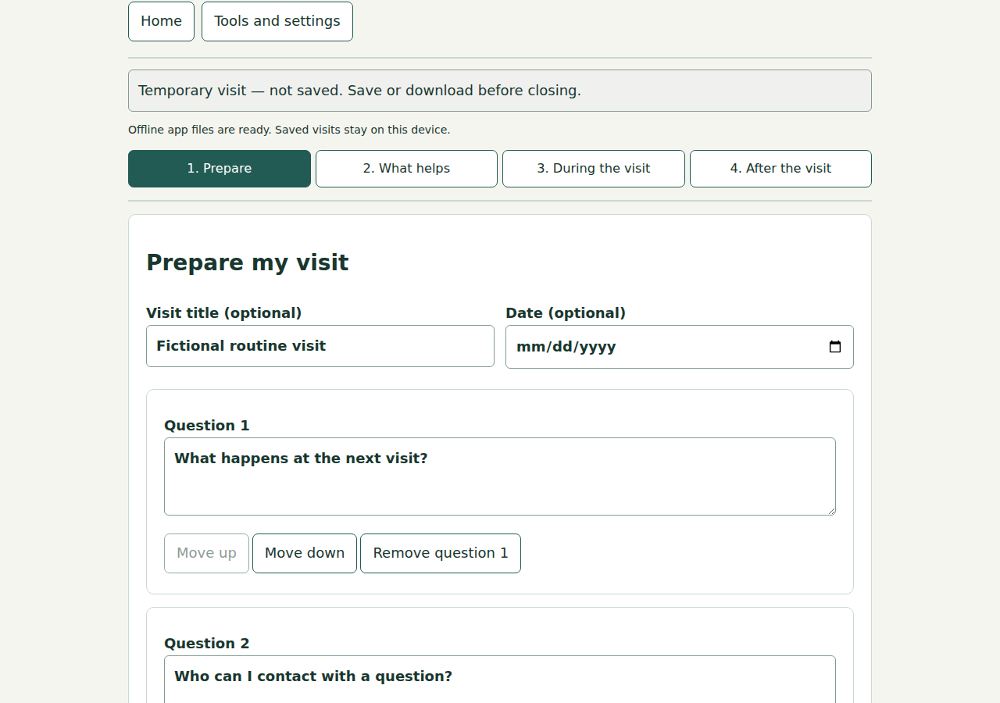
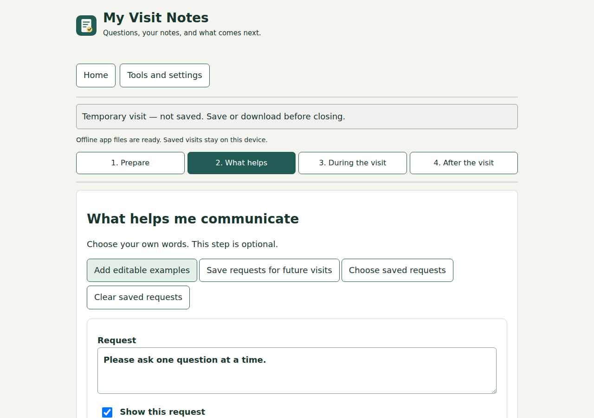
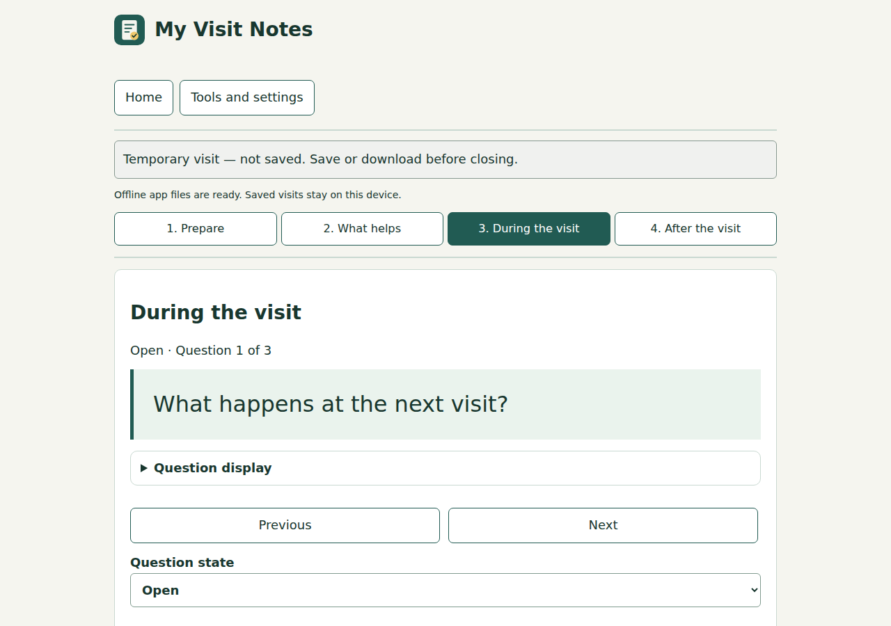
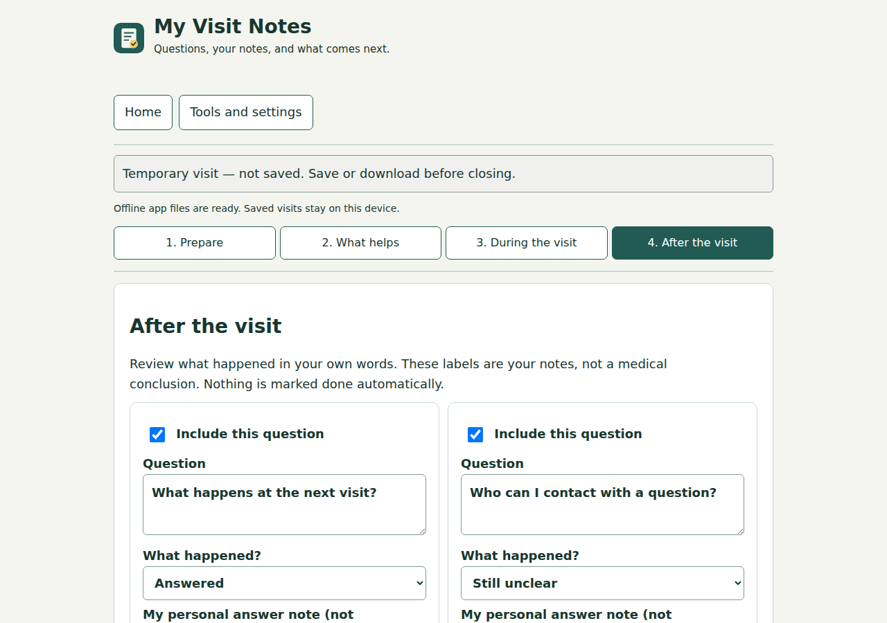

Leave with a clear private record
7/7 after-review browser scenarios passed. The release gate covers 288 checks. Label what happened, keep personal notes private, turn a question into an editable next step, and review selected communication requests without marking anything done automatically.
Detailed requirements · Twelve fictional journeys · Acceptance audit · Recorded results · Plain-language help
Prepare the next appointment
13/13 next-appointment browser scenarios passed. The full release gate covers 288 checks. Choose earlier work, edit independent copies, review the exact plan, return offline and inspect source context without changing the original.
Detailed requirements · Twelve fictional journeys · Acceptance audit · Recorded results
Continue unfinished follow-up another day
16/16 saved-draft browser scenarios passed. The previous saved-draft release covered 250 checks. Save a message or progress draft by choice, reopen offline, and keep saving separate from sending or recording progress.
Detailed requirements · Twelve fictional journeys · Acceptance audit · Recorded results
One clear appointment journey
12/12 whole-journey browser scenarios passed. The previous whole-journey release covered 219 checks. Home separates starting, continuing and following up. Unfinished work has a deliberate return path.
Detailed requirements · Twelve fictional journeys · Acceptance audit · Recorded results
Help me get through the conversation
14/14 conversation browser scenarios passed. The previous conversation release covered 207 checks. Choose words, preview them, show a question or request, hide it, and deliberately return to private notes.
Detailed requirements · Ten fictional journeys · Acceptance audit · Recorded results
Move to another device
15/15 transfer browser scenarios passed. The previous transfer release covered 193 checks. One private file carries saved visits, preparation and progress. Review unsaved snapshots, keep different copies separate and continue deliberately.
Detailed requirements · Ten fictional journeys · Acceptance audit · Recorded results
Know what still needs doing
13/13 follow-up browser scenarios passed. The previous follow-up release covered 162 checks. Choose a focus, record progress, prepare an exact message and carry unfinished items into another visit without changing the originals.
Detailed requirements · Fictional walkthroughs · Acceptance audit · Recorded results
Fix a mistake
16/16 recovery browser scenarios passed. The previous recovery release covered 139 checks. Restore selected items or wording without replacing unrelated newer work.
Detailed requirements · Fictional walkthroughs · Acceptance audit
Save preparation and return
13/13 save-and-resume browser scenarios passed. The previous save-and-resume release covered 110 checks. Preparation can be saved by choice, reopened offline, and completed without repeating recorded additions.
Detailed requirements · Fictional walkthroughs · Acceptance audit · Recorded results
Bring existing notes
12/12 existing-notes browser scenarios passed. Source text is temporary unless preparation is explicitly saved. Only confirmed passages enter a visit.
Detailed requirements · Fictional walkthroughs · Acceptance audit · Recorded results
Current evidence
24/24 visit browser scenarios passed on 2026-09-16T21:53:50.519Z. Browser script errors: 0. See the individual checks below; their coverage is narrower than a complete accessibility or user study.
Engineering release: participant review is deferred at the user’s request. No participant sessions have occurred. Usefulness remains untested.
Machine-readable results · Checks and limits · Decision report
The new appointment-to-appointment checks
15/15 continuity browser scenarios passed. 100 model tests passed. Participant review is deferred; benefit remains unknown.
New browser results · Model results · Acceptance audit · Fictional walkthroughs
- NC-01 — Next steps save, reverse state, cancel removal and share only by choice: passed
- NC-02 — Search and opening saved visits are read-only: passed
- NC-03 — Carry-forward previews selections, excludes notes, preserves source and can cancel: passed
- NC-04 — Reusable requests require selection, persist separately, and are never preselected for sharing: passed
- NC-05 — Whole-library backup, duplicate import, ID conflict and private draft preservation: passed
- NC-06 — Malformed library and failed import writes leave saved data and draft intact: passed
- NC-07 — A library preview cannot overwrite a concurrent tab change: passed
- NC-08 — Waiting next-step edits cannot save a replacement draft: passed
- NC-09 — Real v1 shell upgrades with visits unchanged until saving; old backup restores: passed
- NC-10 — Complete browser restart offline retains next steps and allows the next visit: passed
- NC-11 — New next-step and carry-forward controls work by keyboard and at 320px: passed
- NC-13 — Long-content selection dialogs fit narrow and enlarged views with no outgoing data: passed
- NC-14 — Closing a tab with a waiting action edit preserves the last successful save: passed
- NC-15 — Empty-library restore retains all records and requests; action-only drafts and clear-all work: passed
- NC-12 — Previous app refuses to overwrite the upgraded format: passed
First open to recovery
12/12 phone-release browser scenarios passed. A real standalone Chromium window opened offline with the same saved notes. Phone hardware and native keyboards remain untested.
Phone and installation results · Phone acceptance audit · First-use and recovery walkthroughs
- PH-01 — Home separates start, continue and follow-up without writing or exposing the editor: passed
- PH-02 — Reading choices persist across visits and browser pages without rewriting notes: passed
- PH-03 — Complete first-use to offline return, clean-library restore and next visit: passed
- PH-04 — Guided recovery explains loss, damaged and older files, and conflicts without changing saved data: passed
- PH-05 — Failed saves remain visibly unsaved and guided backup preserves the latest draft: passed
- PH-06 — Long questions survive rotation, reduced keyboard space and switching tabs: passed
- PH-07 — Damaged or blocked reading settings never alter saved visits: passed
- PH-08 — Actual previous release updates to the phone release without changing saved visits: passed
- PH-09 — Keyboard first use and recovery maintain focus; title-only restored drafts warn before closing: passed
- PH-10 — Full Chromium installs and launches a real standalone app with the same notes offline: passed
- PH-11 — Install prompt UI handles refusal, acceptance and failure without writing notes (simulated events): passed
- PH-12 — All reading modes fit narrow screens and primary text has measured contrast; no outgoing content: passed
The four screens
Prepare your questions

Choose what helps communication

Keep your place during the visit

Review unanswered questions and choose a summary

Recorded browser checks
- VN-01 — Three questions need no identity or requests: passed
- VN-02 — Twenty questions, edits, reordering, removal: passed
- VN-03 — Jump and next leave prior questions open: passed
- VN-04 — Answered is reversible and preserves a note: passed
- VN-05 — New question keeps the current place: passed
- VN-06 — Request display excludes private preparation notes: passed
- VN-07 — Saved visit survives closing a page and reopening: passed
- VN-08 — Blocked storage keeps a downloadable draft: passed
- VN-09 — Damaged data, invalid backups, and explicit recovery: passed
- VN-10 — Summary download, clipboard, and print exclude private text: passed
- VN-11 — Backup round-trip, explicit restore, and script-like text: passed
- VN-12 — Delete one, cancel clear, then clear all: passed
- VN-13 — Close and reopen offline after shell setup: passed
- VN-14 — A waiting app update preserves saved visits: passed
- VN-15 — Labels, keyboard entry, narrow screens, enlarged text: passed
- VN-16 — Repeated downloads and cancelled preview leave content intact: passed
- VN-17 — Two tabs cannot silently overwrite each other: passed
- VN-18 — No outgoing content or external requests: passed
- VN-19 — Review groups and selections determine exact summary: passed
- VN-15-keyboard — Complete prepare, save, visit, review and export using keyboard: passed
- VN-13-cold — Saved visits and shell survive a complete browser restart offline: passed
- VN-17-draft-switch — A waiting save cannot capture a replacement private draft: passed
- VN-12-delayed-delete — Changing visits while deletion waits cancels the old deletion: passed
- VN-19-sharing-navigation — Sharing choices survive navigation and request removal cannot shift consent: passed
Optional future participant review
Compare the app with paper or an ordinary notes app using fictional visits. Record whether questions are retained, whether private content stays out of the summary, the help required, and the person's preferred method.
Review plan · Draft invitation and consent · Blank recordRelease copy
Download the app and review files · File hashes and archive checksum. Extract and run the local server described in README.md. Test dependencies are provided by the parent project and are not included in the archive.